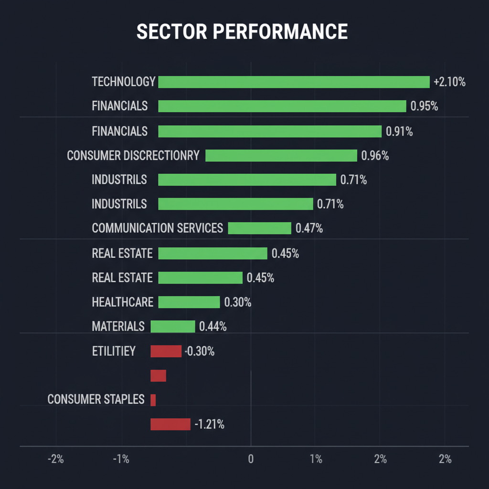
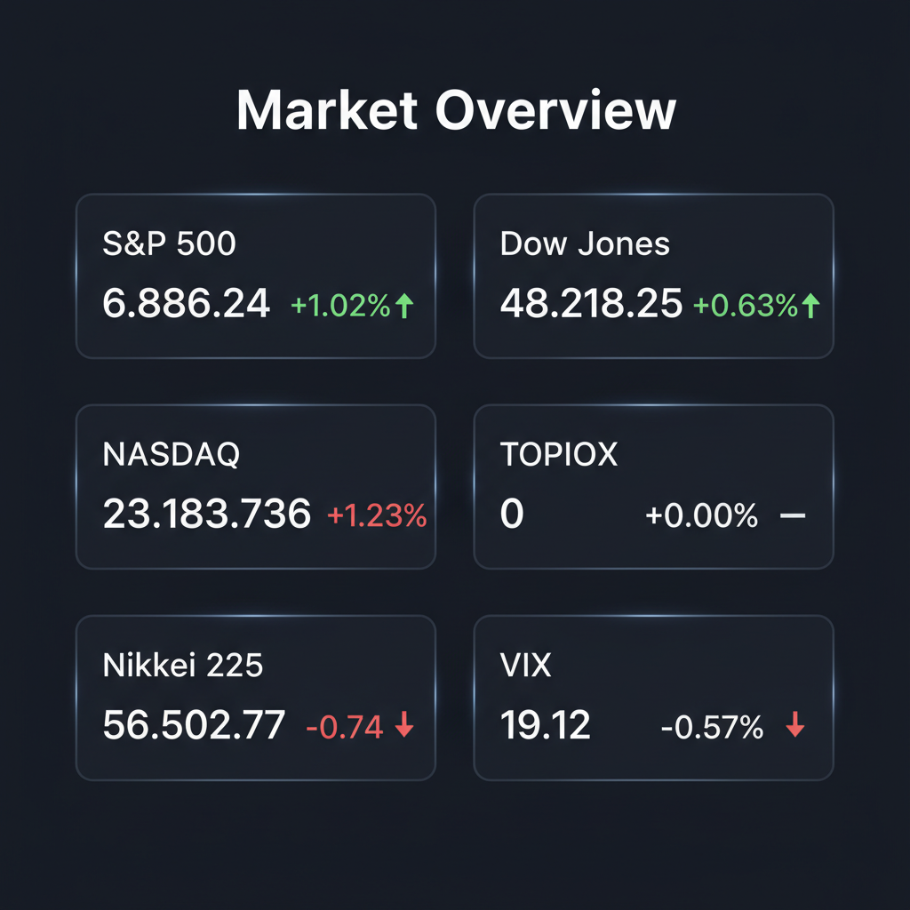

Daily Investment Report - 2026-04-14
Generated: 2026/4/14 7:25:00


以下は、本日の投資チームミーティングにおける各専門家の分析を統合し、投資家の皆様が即座にアクションを取れるようまとめた最終レポートです。
1. エグゼクティブサマリー
- 中東の地政学リスクと原油100ドル突破によるスタグフレーション懸念が燻る中、市場はAI関連や一部の決算銘柄へ資金を向かわせる「懸念の壁を登る相場」を形成しています。
- 全体相場に不透明感が漂う現在、コスト高騰の影響を回避でき、独自の技術や強固なビジネスモデルを持つ「中小型の隠れた成長株」への選別投資が極めて有効です。
- 同時に、VIX指数の不気味な低下に警戒し、厳格なストップロスの設定やキャッシュ比率の引き上げ（30%以上）による徹底したリスク管理が求められます。
2. 注目銘柄リスト
市場の認知がまだ十分に及んでいない、次世代の成長ポテンシャルや底堅い財務基盤を持つ中小型株を中心に選定しました。
強気（買い推奨）
- Credo Technology Group（CRDO） [数ビリオン規模]: DustPhotonicsの買収合意により、次世代AIデータセンターのボトルネックを解消する「光接続（シリコンフォトニクス）」インフラの覇権を握るポテンシャルを秘めており、巨大なTAM（獲得可能市場）に対して割安に放置されています。
- ＡＲアドバンストテクノロジ（5578） [数十億円規模]: 直近で好決算を発表したDX支援・クラウドインテグレーター。物理的なサプライチェーンの制約を受けないため原油高の悪影響を回避でき、売上成長が直接利益に結びつく強い営業レバレッジを有しています。
- ＪＥＳＣＯホールディングス（1434） [小型]: 良好な決算を確認したインフラ・独立系EPC企業。地政学リスク下においても業績の可視性が高く、バリュエーション面での下値不安が限定的（高い安全マージン）です。
- カーブスホールディングス（7085） [中型]: 安定したストック型ビジネスと潤沢なフリーキャッシュフローを持ち、インフレ環境下でも着実な価格転嫁力を発揮できる強靭なビジネスモデルを備えています。
中立（様子見）
- ベイカレント・コンサルティング（6532） [中大型]: 営業利益率30%超とファンダメンタルズは極めて優秀ですが、成長期待がすでに高いPERに織り込まれているため、決算での次期ガイダンスとトップライン成長の持続性を確認するまでは様子見が賢明です。
- オラクル（ORCL） [大型]: AI懸念の後退による買い戻しで11%の急騰を見せチャート上は強気シグナルが点灯していますが、短期的な過熱感があり、高水準のバリュエーションを維持するにはクラウド事業での継続的な高成長の証明が必要です。
弱気（警戒）
- マツダ（7261） [大型]: 見かけのPERは割安に放置されていますが、原油高や物流費高騰の直撃に加え、主力車種「CX-5」の展開遅れにより利益率が致命的に圧迫される典型的な「バリュートラップ（割安の罠）」リスクがあります。
- LVMH（MC.PA） [超大型]: イラン戦争等による地政学リスクの直撃で売上が減少しており、高級品ブランド特有の高い固定費が営業利益の急減（逆レバレッジ）を招くため、スタグフレーション局面での警戒銘柄です。
3. セクター推奨ランキング
1.
テクノロジー（AIインフラ・ソフトウェア） [強気]: 物理的サプライチェーンの制約を受けず、実益を伴う生産性向上需要（AI化・光通信網の構築）があるため、マクロの逆風を跳ね返す力があります。
2.
金融 [強気]: インフレ再燃による高金利環境の長期化（Higher for Longer）と市場の乱高下を、トレーディング収益や利ざや拡大の追い風にできる環境にあります。
3.
エネルギー [中立〜強気]: 原油100ドル超えや中東情勢の緊迫化に対するポートフォリオのダイレクトなヘッジとして機能します。
4.
公益・生活必需品 [弱気]: 金利高止まり観測により相対的に配当利回りの魅力が低下しており、ディフェンシブであっても資金流出が続く懸念があります。
5.
消費財（高級品・一般消費） [弱気]: インフレによる消費者心理の冷え込みとコスト増が利益率を直接圧迫するため、最もポートフォリオの比率を下げるべきセクターです。
4. 今週の注目イベント
- 14日: ＳＨＩＦＴ、ベイカレント・コンサルティング、アクセルＨＤなど、日本企業合計177社の決算発表（業績相場への移行とガイダンスの確認）
- 随時: 米国・イラン間の停戦協議の行方およびホルムズ海峡の封鎖状況に関するヘッドライン
- 随時: 原油価格（WTI等）の推移、およびコンゴの鉱山（銅・コバルト）稼働制限などサプライチェーン動向の続報
5. リスク要因
- 中東情勢の悪化や外交交渉の決裂により、ホルムズ海峡が完全に封鎖され、原油価格がさらに急騰するテールリスク。
- コンゴ等の重要鉱物（銅・コバルト）のサプライチェーン寸断による、ハイテク・EV産業のコスト増大と生産遅延。
- 資源高による「スタグフレーション（物価高と景気後退の併発）」の進行により、中央銀行が利下げに踏み切れず（高金利長期化）、高バリュエーションの成長株が暴落するマルチプル収縮リスク。
- 現在19台と極端に落ち着いているVIX指数が、ブラックスワン的な事象によって瞬時に30〜40台へスパイク（急騰）するリスク。
6. アクションアイテム
- キャッシュ比率の引き上げ: 全体的な市場の急落リスクへのバッファーとして、ポートフォリオの現金比率をただちに30%以上に引き上げてください。
- ストップロスの厳格化: 現在利益が出ているテクノロジー銘柄のポジションには、直近の押し安値や25日移動平均線を基準とした「トレーリングストップ」を必ず設定し、利益を保護してください。
- ヘッジポジションの構築: 全体相場の急落に備え、S&P 500（SPY）やNASDAQ（QQQ）のプットオプション、またはVIXコールオプションを用いた少額の保険的ポジションを構築してください。
- インフレヘッジのリバランス: 原油高・インフレリスクに対抗するため、資金の一部をエネルギー（XLE）や防衛的機能を持つ金融（XLF）へ振り向けてください。
- 新規買い付けの選別: 新規エントリーは、CRDOやＡＲアドバンなどの「特定カタリストを持ち、マクロの影響を受けにくい中小型株」に限定し、株価がサポートラインへプルバック（押し目）したタイミングを狙って実行してください。